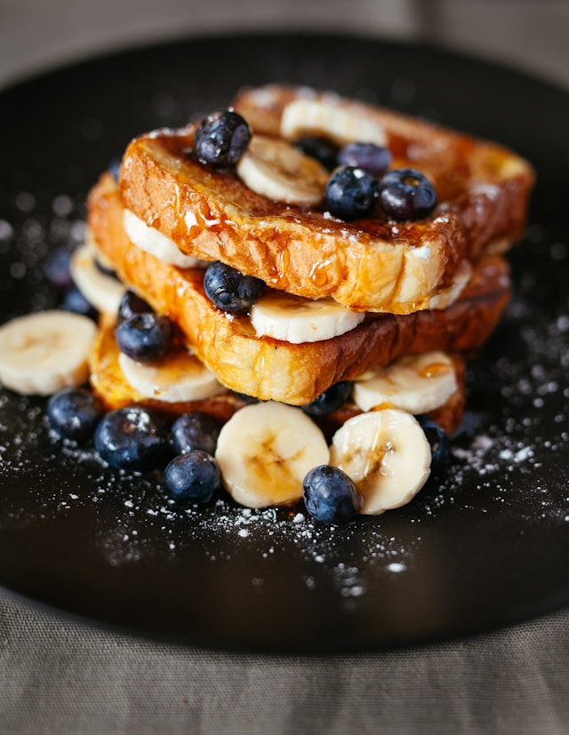
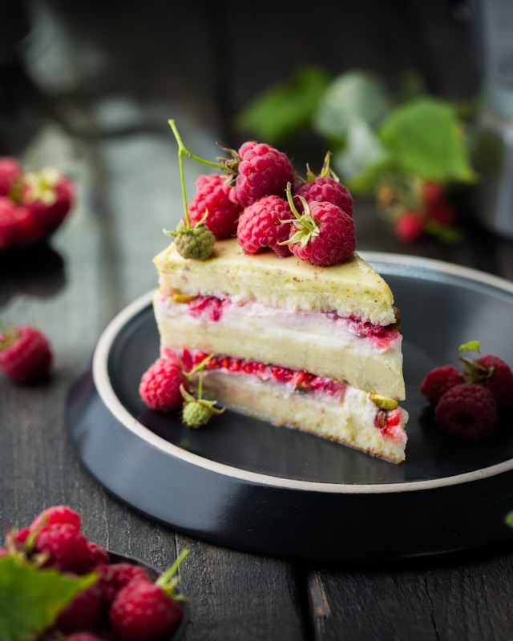

Bread is a baked food product made from water, flour, and often yeast. It is a staple food across the world, particularly in Europe and the Middle East. Throughout recorded history and around the world, it has been an important part of many cultures' diets.

Pastry is various doughs, and the sweet and savoury baked goods made with them. The dough may be called pastry dough. Sweetened pastries are often described as baker's confectionery. Common pastry dishes include börek, pies, tarts, croissants, and turnovers.